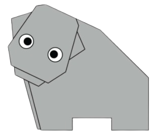
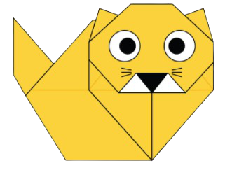

Chameleon
- Chameleons have eyes in the backs of their heads.
- Most chameleons eat on things you wouldn’t want to find on your dinner plate.
- Chameleons take a while to hatch, and don’t live very long.

Pigeon
- Pigeons are renowned for their outstanding navigational abilities.
- Pigeons mate for life, and tend to raise two chicks at the same time.
- Pigeons can fly at altitudes up to and beyond 6000 feet, and at an average speed of 77.6 mph.

Camel
- Camels have three sets of eyelids and two rows of eyelashes to keep sand out of their eyes.
- Camels have thick lips which let them forage for thorny plants other animals can't eat.
- Some calves are born completely white and turn brown as their adult coat comes in.

Teddy Bear
- The teddy was named after President Theodore Roosevelt, after he refused to shoot a bear during a 1902 hunting trip.
- The Oxford English Dictionary dates the first use of the term teddy bear to 1906.
- The official term for a teddy bear collector is an ‘arctophile’.

Panda
- Pandas go from pink to white and black.
- An adult panda can eat 12–38 kilos of bamboo per day!
- Speaking of bamboo, pandas have six fingers on each paw to help them eat bamboo more quickly and efficiently.

Flying Cicada
- The loud whirring or buzzing sound you hear is an all-male cicada chorus.
- Female cicada may be attracted to the sound of motors!
- The body of a cicada is similar to that of a violin.

Hippo
- Hippos can't swim or float.
- One of the closest relatives to the hippo are whales.
- A hippo's skin is bulletproof.

Cat
- There are over 500 million domestic cats.
- Cats and humans have been associated for nearly 10000 years.
- A hippo's skin is bulletproof.